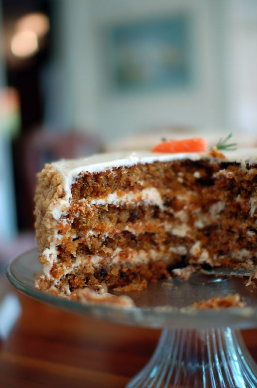

Home
Carrot Cake with Cream Cheese Frosting

Carrot Cake
This carrot cake with cream cheese frosting and crunchy chopped pecans
is easy to make at home and guaranteed to please!
Ingredients
- 3 cups grated carrots
- 2 cups all-purpose flour
- 2 cups white sugar
- 2 teaspoons baking soda
- 1 teaspoon baking powder
- ½ teaspoon salt
- 1 teaspoon ground cinnamon
- 4 large eggs
- ¾ cup vegetable oil
- 1 ¼ teaspoons vanilla extract
- 1 (8 ounce) can crushed pineapple with juice
- ¾ cup chopped pecans
- 3 ½ cups confectioners' sugar
- 1 (8 ounce) package Neufchatel cheese
- ½ cup butter, softened
- 1 ¼ teaspoons vanilla extract
- 1 cup chopped pecans
Steps
- Preheat the oven to 350 degrees F (175 degrees C). Grease and flour a 9x13-inch pan.
- Combine grated carrots, flour, white sugar, baking soda, baking powder, salt, and cinnamon in a
large bowl; stir in eggs, oil, 1 ¼ teaspoons vanilla, pineapple, and ¾ cup chopped pecans. Spoon batter into prepared pan.
- Bake in the preheated oven until a toothpick inserted into the center of the cake comes out clean, about 30 to 40 minutes. Let cake cool.
- To make the frosting: Combine confectioners' sugar, Neufchatel cheese, ½ cup butter and 1 ¼ teaspoons
vanilla in a medium bowl; beat until smooth. Fold in 1 cup chopped pecans. Spread frosting on cooled cake.